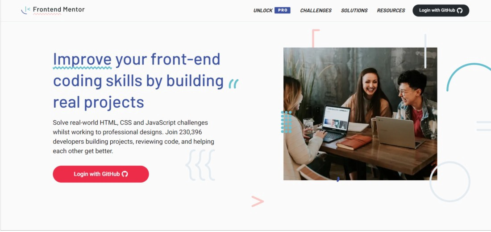

1.Codecademy არის უფასო, მარტივად გამოსაყენებელი პლატფორმა,რომელიც გვთავაზობს მაღალი დონის კურსებს,რომელიც დამწყებთათვის ნამდვილად ბევრ სასარგებლო ინფორმაციას მოიცავს.მას აქვს როგორც უფასო ,ასევე ფასიანი Pro ვერსია, რომელიც მოიცავს 7-დღიან უფასო საცდელ ვარიანტს.პრო-ვერსიის გამოყენების შემთხვევაში კურსის ბოლოს გაიცემა სერთიფიკატი.

2.Udemy არის პლატფორმა შექმნილია იმისთვის, რომ დაგეხმაროთ ისწავლოთ ან გააუმჯობესოთ კონკრეტული უნარი. ყველა სტუდენტი, რომელიც დაასრულებს კურსს, იღებს სერთიფიკატს.კურსები ფასიანია,მაგრამ საკმაოდ ხშირად არის ფასდაკლებები,სულ რაღაც 8.90$-დაც კი შეძლებთ დაეუფლოთ სრულიად ახალ პროფესიას საკმაოდ მაღალ დონეზე.

3.W3Schools არის შესანიშნავი უფასო რესურსი დამწყებთათვის, რომლებიც სწავლობენ HTML, CSS და JavaScript და არა მხოლოდ. ვებ-გვედი სავსეა მასალებით,რომელიც დაგეხმარებათ სრულიად უფასოდ შეისწავლოთ სხვადასხვა პროგრამირების ენა.
4.ეს პლატფორმა ძირითადად ყურადღებას ამახვილებს კოდირების გამოწვევებზე. ეს პლატფორმა შეიძლება გამოყენებულ იქნას თქვენი უნარების განვითარებისა და გასაძლიერებლად პროექტის რეალურად შესაქმნელად. ეს არის შესანიშნავი პლატფორმა თქვენი პრობლემების გადაჭრის უნარების გამოსაყენებლად.Codewars არის ასევე კარგი პლატფორმა JavaScript-ის პრაქტიკისთვის.
5.Front End მენტორი საშუალებას გაძლევთ ივარჯიშოთ რეალური სამუშაო პროცესის გამოყენებით. მათი გამოწვევები მოიცავს მობილური და დესკტოპის დიზაინებს.თქვენ იმუშავებთ HTML, CSS, JavaScript, ფრეიმვორქებით(როგორიცაა React, Vue.js და ა.შ.) და ურთიერთქმედებთ API-ებთან.